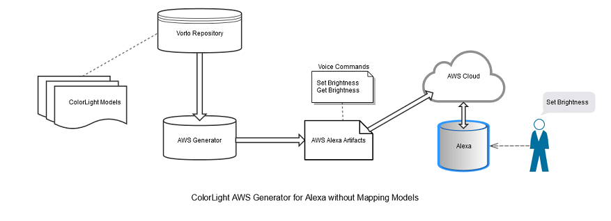
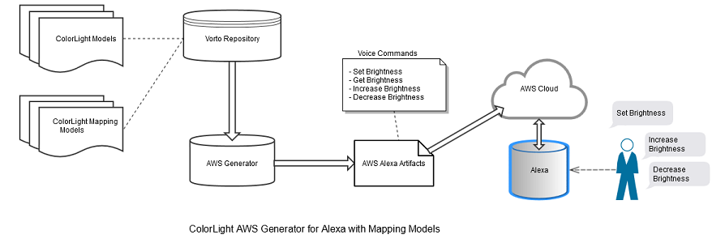
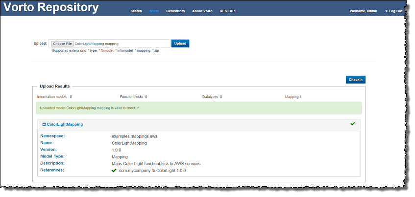

Mapping Models
This section details the following topics:
Overview
Vorto allows the user to define mapping rules to map Vorto models to other target platform domain models.
The primary purpose of defining model mappings in Vorto is to directly translate or map datatype/functionblock/information model descriptions from Vorto to any other IoT platforms (for example, Kura, Eclipse Smarthome). Vorto model mapping acts as a bridge between Vorto definitions and target platforms/technologies.
Use Cases
The model mapping provides an option to enhance the Vorto models with additional metadata descriptions targeted for a specific platform. Thereby the code generators can leverage the expanded metadata descriptions customized for their platforms. Vorto helps to integrate with other IoT platforms through the model mapping in flexible manner. Here are few possible scenarios where model mapping can be used:
- Translate Vorto model definitions to understand other IoT platforms.
- Provide additional metadata in case the Vorto model is not able to describe a specific IoT solution.
- Provide different model mappings for multiple versions of target platforms (For example, iOS 7/8).
Defining Mapping Models
Model mapping can be defined for the following:
Features
The model mapping contains a direct mapping of Vorto grammar descriptions to custom defined Stereotypes and Attributes specific for the target platform.
Stereotypes are custom defined keywords which are leveraged by target platform generators.
Attributes are custom defined key value pairs for a specific stereotype which is again leveraged by specific target platform generators.
A simple model mapping statement from Vorto to Philips Hue looks likes below
...
from ColorLight.category to philipshue with {configuration : "devicetype"}
...
In the above mapping philipshue is a custom defined stereotype, configuration is a custom defined attribute and the value devicetype is the actual value which is being mapped to Philips Hue definitions. The code generators can make use of these additional metadata which could be targeted for specific IoT solutions or platforms.
Illustration
To demonstrate the potential for model mapping, let us define a model mapping to enhance Alexa commands for the AWS genertor.
The following two examples definitions are given:
ColorLight functionblock definition
namespace com.mycompany.fb
version 1.0.0
displayname "ColorLight"
description "Function block model for ColorLight"
category demo
functionblock ColorLight {
status{
mandatory brightness as int
}
operations{
setBrightness(level as int)
}
}
ColorLightSystem information model definition
namespace com.mycompany.informationmodels
version 1.0.0
displayname "ColorLightSystem"
description "Information model for ColorLightSystem"
category demo
using com.mycompany.fb.ColorLight ; 1.0.0
using com.mycompany.fb.Switcher ; 1.0.0
infomodel ColorLightSystem {
functionblocks {
colorlight as ColorLight
}
}

By invoking the AWS Generator without any model mapping from Vorto Repository, it generates the following Alexa voice command vocabulary in the colorlightsystemUtterances.txt file.
setBrightness {level}
brightness get brightness status
These voice commands are provided as an input to the AWS service to set the appropriate brightness level to any device. The details of how the AWS services control the actual devices are beyond the scope of this documentation.
Now we define a model mapping ColorLightMapping to enhance the Alexa voice commands vocabulary for the ColorLight functionblock. Thereby, more voice commands are recognized by AWS services to control the actual devices.
namespace examples.mappings.aws
version 1.0.0
displayname "Color Light AWS Mapping"
description "Maps Color Light functionblock to AWS services"
using com.mycompany.fb.ColorLight;1.0.0
functionblockmapping ColorLightMapping {
targetplatform aws
from ColorLight.operation.setBrightness to alexa with {command: "set brightness to {level} ; increase brightness to {level} ; decrease brightness to {level}"}
}

In the above mapping, the Alexa voice command is enhanced by additional commands with increase and decrease to control the ColorLight. Here, alexa is a custom defined Stereotypes keyword which the AWS Generator interprets and makes use of the additional values defined in the model mapping. Again, command is a custom defined Attribute keyword which the AWS generator can understand.
Once this model mapping ColorLightMapping is defined, it can be shared using the Vorto Repository Web interface page:

| Note: Currently, model mappings are shared only through the Vorto Repository Web interafce. |
With this model mapping the AWS Generator generates the file colorlightsystemUtterances.txt with the following content:
setBrightness set brightness to {level}
setBrightness increase brightness to {level}
setBrightness decrease brightness to {level}
brightness get brightness status
As you can see, the Vorto model mapping definition greatly enhances the capabilities of any platform, in this case the AWS Alexa platform.